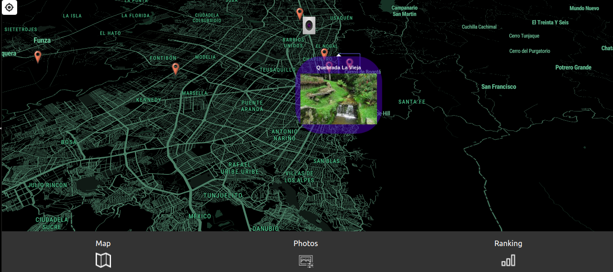

Map
In this section you will find the map with all the places you have visited, the marks that are seen there are the places that you have already visited and you have taken a photo in that place.
We are an application designed for all those who want to keep memories of the places they have traveled to.
These are some of the technologies that we have used to develop the project.


In this section you will find the map with all the places you have visited, the marks that are seen there are the places that you have already visited and you have taken a photo in that place.
The photo function aims to show those memories that you have taken in the places marked on the map, it will show it to you as if it were a photo gallery.
The ranking section will show you in a top 10 the percentage completed in the city, the more places you travel the more percentage you will have, which is essential to move up.